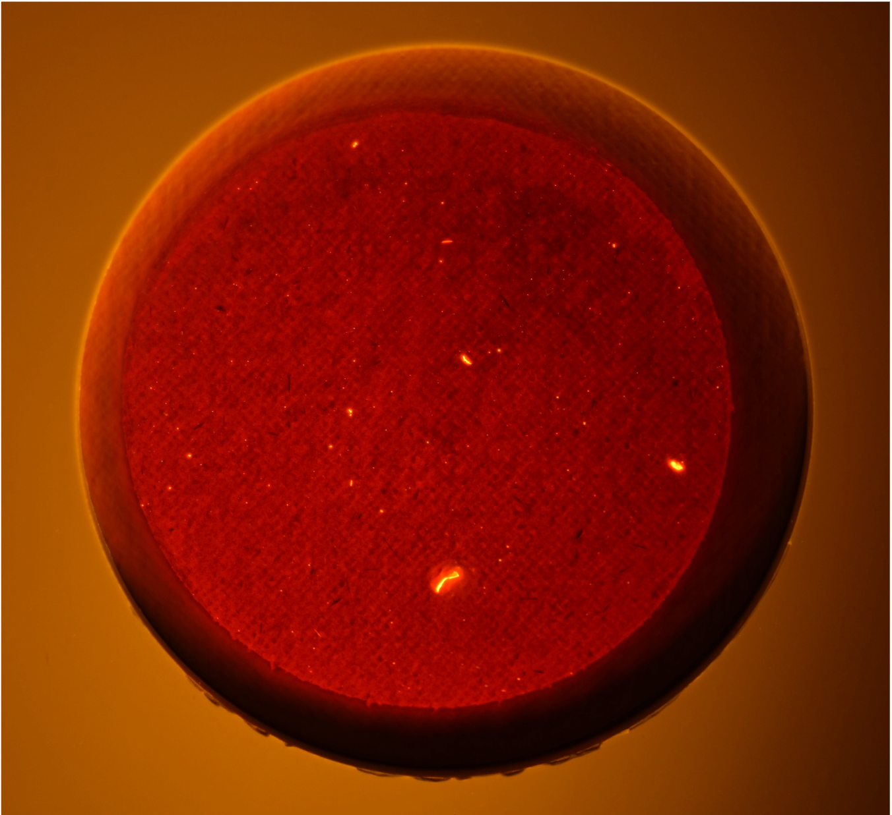

Project Overview
Trout in the Trym is a local volunteer group dedicated to restoring the River Trym and enhancing its natural habitat. While the group possesses the capacity to regularly monitor general water quality metrics, they lack the technical resources required to directly quantify microplastic concentrations.
This applied research project was conducted to establish baseline data on microplastic pollution within the catchment, evaluate spatial distributions relative to infrastructure inputs, and test potential proxy variables for monitoring.
Research Questions
- Are microplastics present in the River Trym’s sediment or water column? If present, what is their spatial distribution?
- Is microplastic concentration related to specific infrastructure inputs—namely Combined Sewage Overflow (CSO) discharge points?
- Can other standard water quality indicators be used as a reliable proxy measurement for microplastic concentrations?
Laboratory & Quantification Method

Microplastic (MP) quantification using Nile Red fluorescent dye. Filter paper photographed under UV light enabling manual counting of MP particles.
Key Findings
- Spatial Distribution: Microplastic concentrations exhibited significant spatial variation across sampling sites (ranging from
0 MP/gto113.48 MP/g). A one-way ANOVA confirmed that sampling site location contributed substantially to overall variance. - CSO Proximity Relationship: A linear regression modeling microplastic concentration against downstream distance from CSOs yielded a minor positive coefficient (0.0125). Although downstream distance explained 18% of variance, the relationship was not statistically significant.
- Proxy Evaluation: Kendall’s rank correlation tests revealed that Electrical Conductivity served as a moderate positive proxy, while Dissolved Oxygen showed a weak positive association. Other indicators—including pH, E. coli, nutrients, and Total Organic Carbon (TOC)—demonstrated no statistically significant relationship.
Methodology & Analytical Pipeline
- Data Integration: Compiled field probe data (pH, EC, DOC) and laboratory metrics (E. coli, nutrient analysis, microplastic counts) into a unified dataset in R.
- Exploratory Data Analysis: Checked parametric assumptions via statistical normality testing across primary and secondary datasets.
- Statistical Modeling: Evaluated site variation via one-way ANOVA, modeled CSO spatial relationships with linear regression, and visualised mean trends using
ggplot2in R. - Spatial & Interactive Mapping: Converted sample sites and CSO locations into spatial objects using the
sfpackage and generated an interactive web map withLeaflet.
Skills Demonstrated
- Field Sampling & Laboratory Analysis
- E. coli & Nutrient Analysis
- Exploratory Data Analysis (R)
- Interactive Mapping (sf / Leaflet)
- Stakeholder Communication
- Applied Environmental Research